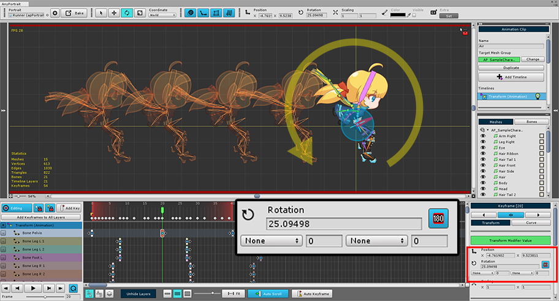
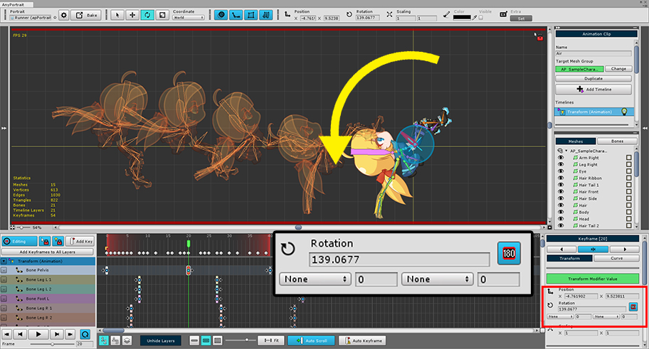
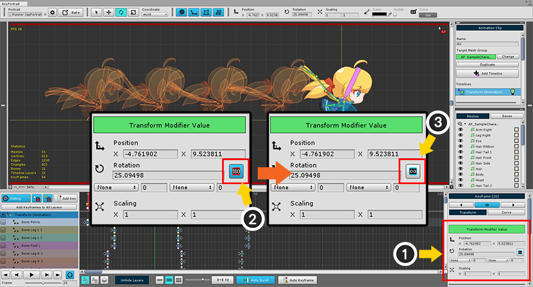

AnyPortrait > Manual > Rotate without limiting angle
Rotate without limiting angle
1.2.2

This page covers the examples and solutions that limit the angle of rotation of objects in animation.
We recommend that you read the instructions on the previous page. (Related page)
When creating a rotation animation, let's see what the limitations are.

Let's rotate the character counterclockwise.
You can easily check how it will be animated using the Onion Skin function. (Related page)
The rotation of the keyframe is currently about 25 degrees.

Slightly rotated counterclockwise.
The angle of rotation increased to approximately 139 degrees.
(AnyPortrait rotates counterclockwise as the angle increases.)
Looking at Onion Skin, there is no problem with the animation yet.

The image above shows the character rotated further.
(1) As the angle increases, it goes beyond 180 degrees and becomes a negative value.
(2) The character that looks like Onion Skin does not rotate backwards, but rather rolls forward.
In many animation programs and systems, the angle of rotation is often limited to "0 ~ 360", or "-180 to +180".
AnyPortrait has been developed to have a value within "-180 ~ +180" by default.
This method has the advantage of preventing the object from rotating too much due to incorrect input during editing, and making calculations such as IK easier.
However, there can be problems when trying to create a rotation animation with a large amount of change as above.
Therefore, if you encounter any of the above issues, you should turn off the limit so that keyframes have a value less than -180 degrees or more than +180 degrees.

(1) Select a keyframe and check the property UI of the keyframe. (Select the Transform tab.)
(2) Press the 180 degree limit button, (3) release the rotation angle limitation.
Let's rotate the character again.

Rotate the character counterclockwise in the same manner as above.
There is no problem yet.

(1) As it rotates further, it is not negative this time and rotates at an angle greater than +180 degrees.
(2) You can see that the animation is normal.
Note that.
The rotation angle limititation is not a property of the keyframe, it is a temporary setting in the editor.
By default, the angle is always constrained unless you release the limit of the direct rotation angle.
Therefore, please only temporarily release this limitation if you encounter any of the above issues.